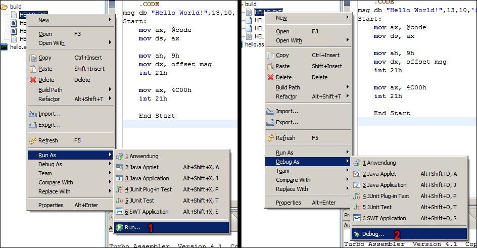
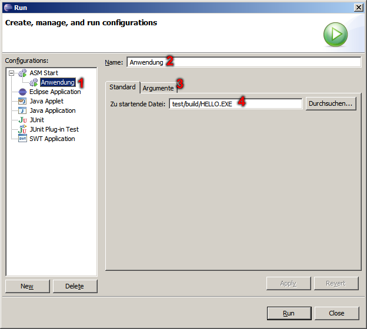
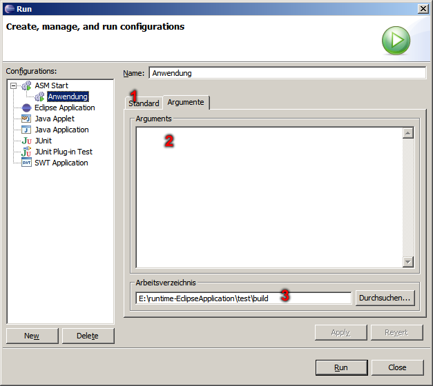

ASM Plug-In - Run/Debug Options
It is shown here like one for executing or debugging made programs comes to the individual attitudes.

- Individual attitudes for executing.
- Individual attitudes for debugging.
In this dialog you can set the name of individual attitude and for which file.

- Selection of individual attitudes.
- Name of individual attitudes.
- Define more parameters
- The individual attitudes refer file.
In this dialog you can which parameters and which work directory of the file to be started or debugged used.

- Setup default attitude.
- Parameters for executing or debugging.
- Set working directory.